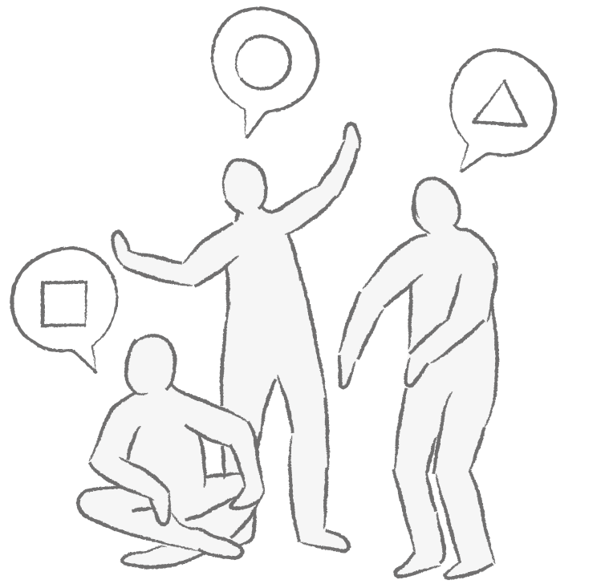
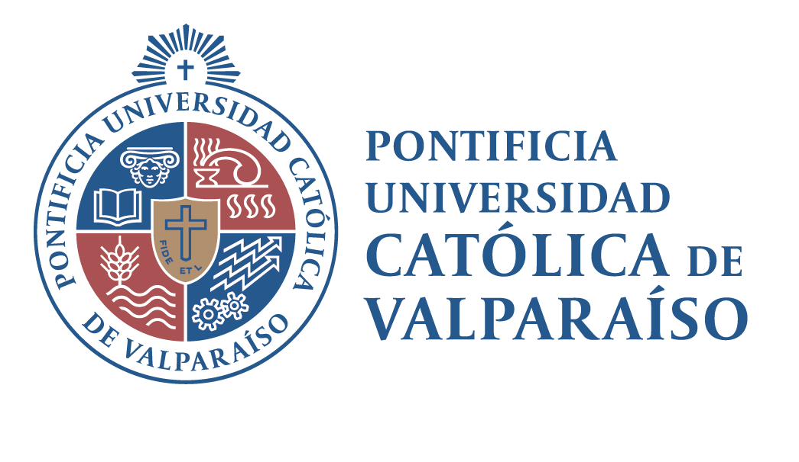
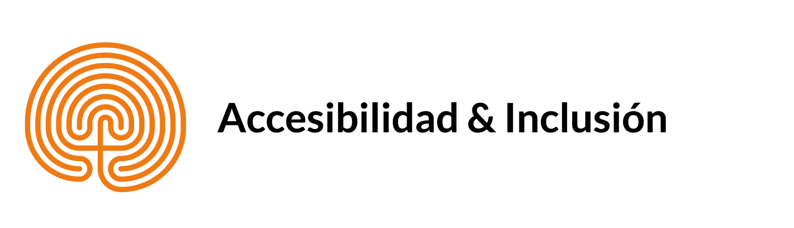
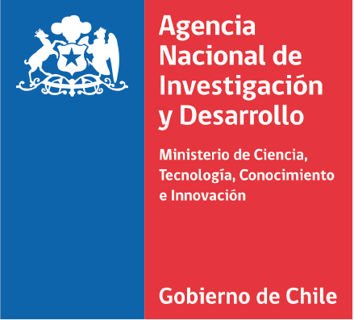

Este libro relata la experiencia de un equipo de investigación compuesto por académicos y personas con discapacidad intelectual que, durante los últimos tres años, han trabajado desde un enfoque de investigación inclusiva. Este paradigma asume que las personas con discapacidad intelectual deben ser protagonistas de las investigaciones que les competen. Por eso, a lo largo de este libro se describe el proceso de investigación inclusiva desarrollado por el equipo, abordando sus diferentes etapas, actividades y roles.
Expertos por Experiencia
El proceso de investigación inclusiva:
un desafío para los nuevos tiempos
Izaskun Álvarez-Aguado · Paulina Carrasco Delgado · Félix González Carrasco · Katherine Exss Cid ·
Marcela Jarpa Azagra · Herbert Spencer González · Vanessa Vega Córdova


Investigación enmarcada dentro del Proyecto Fondecyt Regular Nº1190789 “Nuevos desafíos para la educación en Chile: Apoyos a la Vida Independiente de adultos con Discapacidad Intelectual o del Desarrollo”, financiado por la Agencia Nacional de Investigación y Desarrollo (Chile).
- ISBN: 978-956-17-0958-4
- Ediciones Universitarias de Valparaíso
- Diseño e ilustraciones: María Jesús Osandón, Felipe Meza
- Contacto: accesibilidad-inclusion@ead.cl


